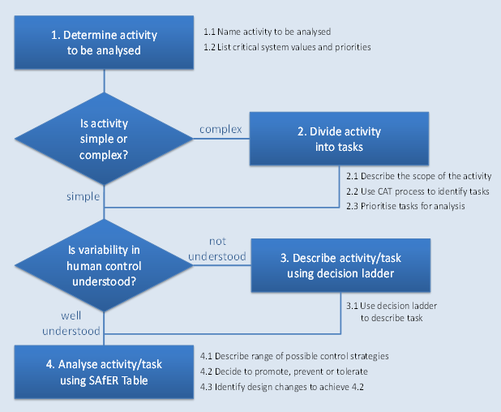

SAfER (Strategies Analysis for Enhancing Resilience) helps you perform the following:
The SAfER method can be used flexibly to suit your analysis using the flow diagram shown below.
To help you perform your SAfER analysis HINTS are provided at the top of the pages.
To navigate through the SAfER application, click on the buttons on the left sidebar or use the Next/Back buttons on the top right of the page.